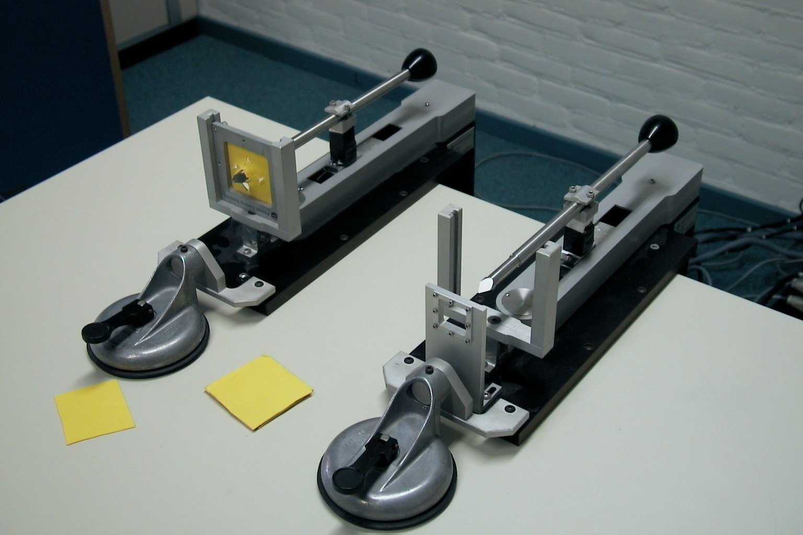

In 1998 I joined the flight simulation division of what was once the Fokker aircraft company. This was the start of my career in what was once called "artificial feel", and which is now called haptics.
I was hired as the first dedicated employee of the planned new medical branch of this small division.
There were a few projects underway, and my first job was to bring them to a satisfactory ending. This section gives some details on these early projects. The first project which I initiated myself was the FCS Haptic Master, which deserves its own section .
There was a very good reason for FCS to "pivot" from control loading in flight simulators, into other markets.
At the time, FCS management feared that their market was going to dry up, because in future all high end aircraft would have fly-by-wire control sticks, with no mechanical connection to the rudder and elevator. Only the helicopter business might be spared. They were looking for a replacement market with similarly high margins and low numbers, and their eye fell on the medical market.
Ironically, the medical haptics market never really took off, and the control loading business is still thriving. As it happens, actual flight joysticks are so expensive that it still pays to make working copies for use in flight simulators.
As a first medical demo, FCS had made a simple master-slave setup of two identical coupled "trocars", big pins for puncturing the belly of a patient before starting minimally invasive surgery.
The demo used standard control loading hardware and software, and the result was technically amazing. The picture shows the setup.

FCS master-slave trocar
Both pins could be handled independently or at the same time. In the demo, the user could puncture pieces of leather stretched in a small frame. You could puncture the right hand piece by handling either the right hand knob or the left hand one, it made absolutely no difference.
People at trade shows were crouching under the table to see where the connecting rod was, but there was none. You could even fight each other with the two knobs, if you felt like it. The coupling was rock hard, and there was no delay.
The technology coupling the two devices is known today as "admittance control", but at the time it was just called "the FCS force loop". We will have much more to say on this force loop in a separate section.
FCS had pioneered this force loop on hydraulic control loading actuators, and was in the process of transitioning to electric drive. The old timers muttered that this reduced the qualtity of the feel, and they were right. But the hydraulics was energetically very inefficient, needed a noisy pump, and it always leaked. Always.